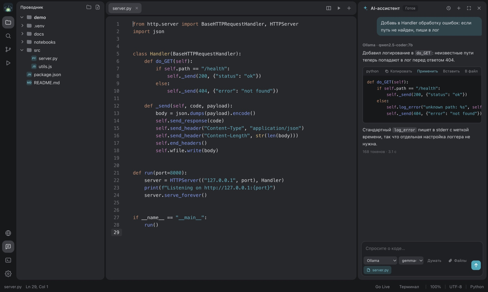
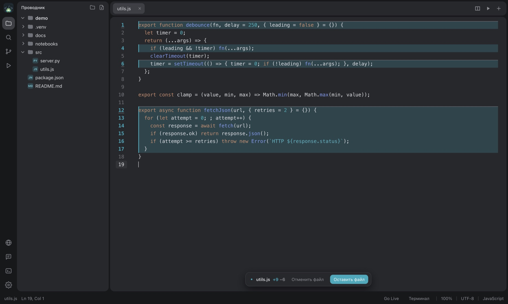
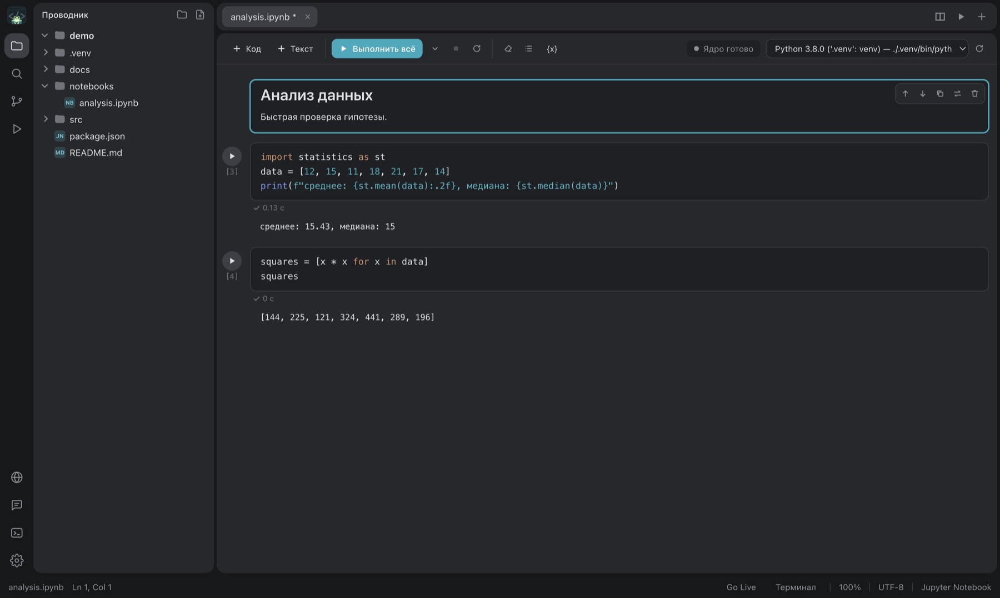
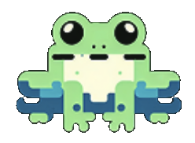

Локальные модели
Ollama и LM Studio. Код остаётся на вашем компьютере и работает без интернета.
Подключите Ollama, LM Studio или свой провайдер. Чат видит ваши файлы, предлагает правки, а вы принимаете или откатываете их одной кнопкой.
Другие платформы и все релизы на GitHub

Чат с ИИ, проверка его правок, ноутбуки, терминалы и запуск проекта без переключения между программами.
Ответ модели не затирает файл. Изменения подсвечиваются в самом редакторе, и вы решаете, что оставить: «Оставить файл» или «Отменить файл».

Открывайте .ipynb и запускайте ячейки. Редактор сам находит .venv, conda и pyenv проекта и предлагает выбрать ядро.

Сохраните команду один раз и запускайте кнопкой. Каждая конфигурация открывается в своей вкладке терминала, скрипты из package.json подхватываются сами.

Локальная модель держит код на вашей машине. Если нужна мощнее, подключается провайдер с вашим ключом.
Ollama и LM Studio. Код остаётся на вашем компьютере и работает без интернета.
Серое продолжение принимается по Tab. Для FIM-моделей учитывается код после курсора.
Прикрепляйте файлы к сообщению, редактируйте свои сообщения и перегенерируйте ответы.
Страница обновляется при сохранении, встроенный браузер открывается рядом с кодом.
Поиск и замена, поиск по проекту, перетаскивание файлов, изменения из других программ подхватываются сами.
Liquid Glass на macOS, светлые и тёмные темы, свои темы в JSON, несколько окон.
Ставятся из панели «Расширения» в один клик и работают полностью. Темы и сниппеты можно взять и из расширений VS Code в Open VSX.
Загружаю каталог…
Плагин - это файл .js или .css с доступом к редактору: кнопки на левой панели, текст открытого файла, предпросмотр Markdown. Его можно поставить отдельно или упаковать в расширение. Плагины FgSNotes работают без изменений.
Как написать плагин// ==FrogeePlugin== // @name Вставить дату // ==/FrogeePlugin== frogee.addButton({ title: 'Вставить дату', icon: 'calendar', run: (editor) => editor.insert( new Date().toLocaleDateString()), });
FrogeeSoft / проекты
Примеры задач для компаний и проектов с их поддержкой. В открытых репозиториях можно посмотреть код и технические детали.
Обсудить свой проектЯндекс
Работа с топологией для задач Яндекса.
При поддержке «Геоскан»
Обследование сооружений с помощью БПЛА: ортофото фасада и поиск трещин на снимках.
Код проекта ↗При поддержке ПАО «Яковлев»
Коррекция курса и посадки по цветовой метке. Алгоритм отрабатывается в симуляторе Gazebo SITL.
Код проекта ↗Не нашли ответ? Напишите нам, контакты ниже.
Нет, если модель локальная: Ollama и LM Studio работают на вашем компьютере. Интернет нужен только для облачных провайдеров вроде OpenRouter.
Ничего. Код открыт и распространяется по лицензии MIT.
macOS, Windows и Linux. Стеклянное окно с размытием есть только на macOS, на остальных окно непрозрачное и берёт цвета темы.
В папке Документы/FrogeeCodeIDE: настройки в config, темы в themes, плагины в plugins, расширения в extensions.
Частично. Панель «Расширения» ищет в Open VSX: из расширений VS Code берутся темы оформления и сниппеты, а их код не запускается. Расширения из каталога FrogeeCodeIDE работают полностью.
Настройки → Плагины → «Установить…» и выберите файл .js или .css. Плагин выполняется внутри редактора, поэтому ставьте только те, которым доверяете.
Бесплатно. Сборки лежат на странице релизов GitHub.
.dmg для Apple Silicon и .zip с приложением.
Для macOSУстановщик .exe и портативная версия в .zip.
Для WindowsAppImage без установки и пакет .deb.
Для Linux
Напишите в Issues на GitHub или на почту команды. Мы читаем всё и отвечаем.
Открыть Issues